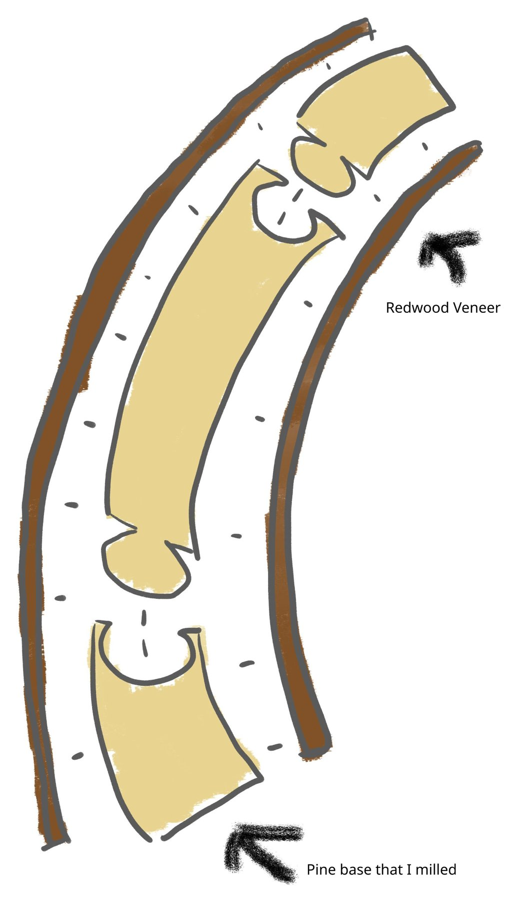
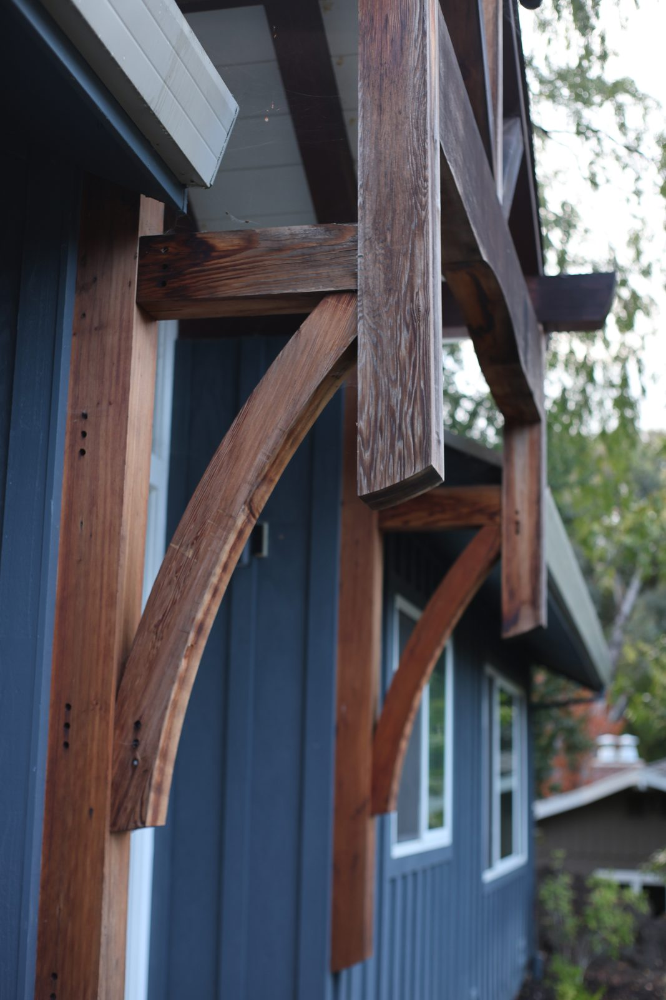
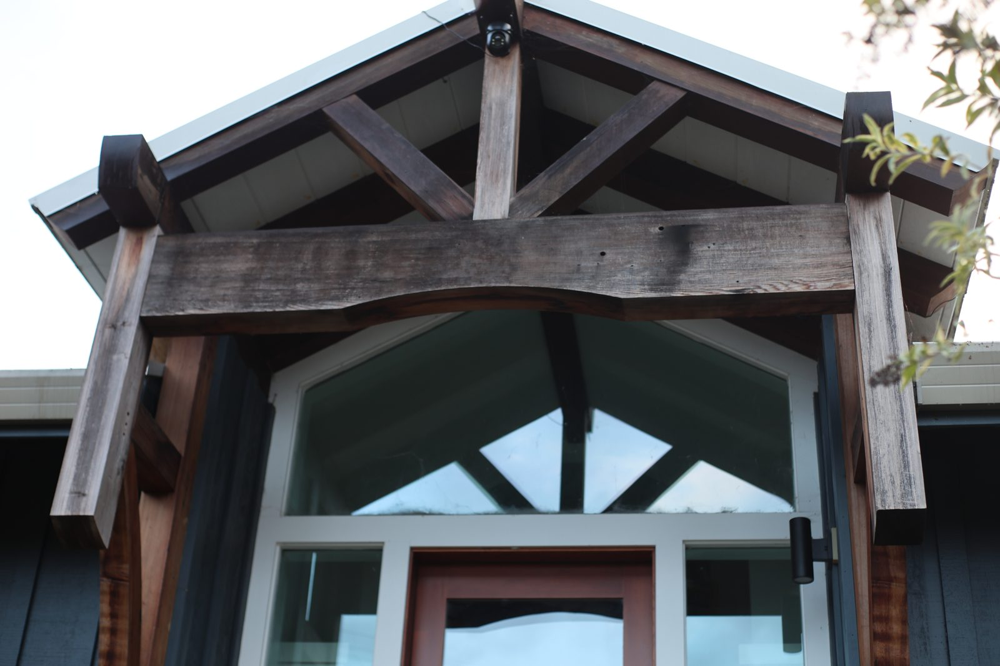

Entrance arches



This was the project that convinced my dad to buy a CNC machine, because arches are generally very hard to create in woodworking. I managed the whole CNC portion of the project, from CADing and generating the toolpaths to setting up the machine and learning basic operations like zeroing the workpiece and basic tuning. The rest of the project was designed by my dad, and we completed the manual labor together.